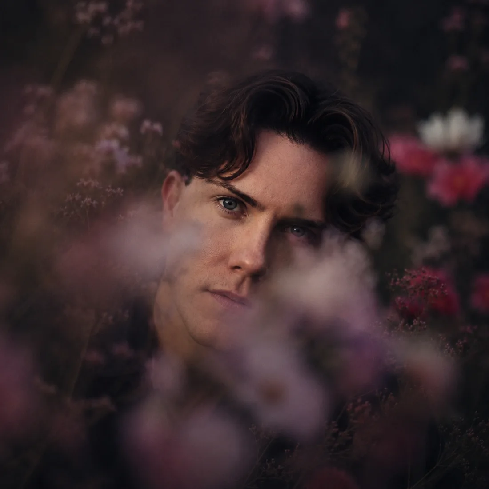

Mika Maria Schöberl
Buchautor*in · Kolumnist*in · Künstler*in · Wissenschaftler*in
Naturverbunden in Wort und Tat erzähle ich Geschichten, die im Herzen wurzeln.

Bücher & Kolumnen
50 Wörter für Liebe · Grüne Seelen — Bücher, Hörbücher und Kolumnen.
Entdecken
Über mich
Wer hinter Funkenfangen steht — Weg, Werte und Bilder.
KennenlernenSummerchild
Mein Musikprojekt — zu Hause auf summerchild.net.
HörenHexenwerk
Texte zur Figur der Hexe — mein wissenschaftliches Projekt auf mikaschoeberl.com.
LesenTippen zum Abspielen
Bekannt aus

Starte
das Gespräch.
Keine langen Formulare. Kein Fragebogen. Schreib einfach — was dich bewegt, was du suchst, oder nur: dass du da bist. Ich antworte persönlich.
kontakt@funkenfangen.comAntwort innerhalb von 48 Stunden · München · auch online möglich
Impressum
Angaben gemäß § 5 TMG
Mika Maria Schöberl
Grasmückenweg 7b
80937 München
Deutschland
Kontakt
E-Mail: kontakt@funkenfangen.com
Tel.: +49 151 10616206
Urheberrecht
Die durch den Seitenbetreiber erstellten Inhalte und Werke unterliegen dem deutschen Urheberrecht. Vervielfältigung, Bearbeitung und Verbreitung außerhalb der Grenzen des Urheberrechts bedürfen der schriftlichen Zustimmung.
Haftungsausschluss
Für externe Links übernehmen wir keine Haftung. Bei Bekanntwerden von Rechtsverletzungen werden wir entsprechende Inhalte umgehend entfernen.
Verbraucherstreitbeilegung
Wir sind nicht bereit oder verpflichtet, an Streitbeilegungsverfahren vor einer Verbraucherschlichtungsstelle teilzunehmen.
Redaktionell verantwortlich
Mika Maria Schöberl · Grasmückenweg 7b · 80937 München
Datenschutzerklärung
1. Allgemeines
Diese Website wird bei Netlify gehostet (Netlify, Inc., 44 Montgomery Street, Suite 300, San Francisco, CA 94104, USA). Beim Besuch werden technische Daten automatisch erfasst (Browser, Betriebssystem, IP-Adresse, Uhrzeit). Diese Daten werden zur fehlerfreien Bereitstellung der Website benötigt.
2. Verantwortliche Stelle
Mika Maria Schöberl
Grasmückenweg 7b · 80937 München
E-Mail: kontakt@funkenfangen.com
3. Kontaktaufnahme per E-Mail
Wenn Sie uns per E-Mail kontaktieren, werden Ihre Angaben zur Bearbeitung der Anfrage gespeichert. Diese Daten geben wir nicht ohne Ihre Einwilligung weiter. Rechtsgrundlage ist Art. 6 Abs. 1 lit. b DSGVO.
4. Keine Cookies / kein Tracking
Diese Website verwendet keine Tracking-Cookies und keine Analyse-Tools von Drittanbietern. Es wird kein Nutzerverhalten ausgewertet.
5. Ihre Rechte
Sie haben jederzeit das Recht auf Auskunft, Berichtigung oder Löschung Ihrer gespeicherten Daten. Beschwerden richten Sie an den Bayerischen Landesbeauftragten für den Datenschutz (BayLfD), Wagmüllerstraße 18, 80538 München.